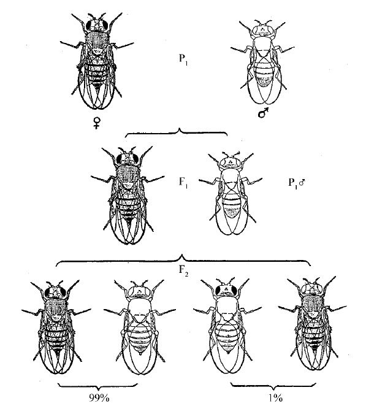
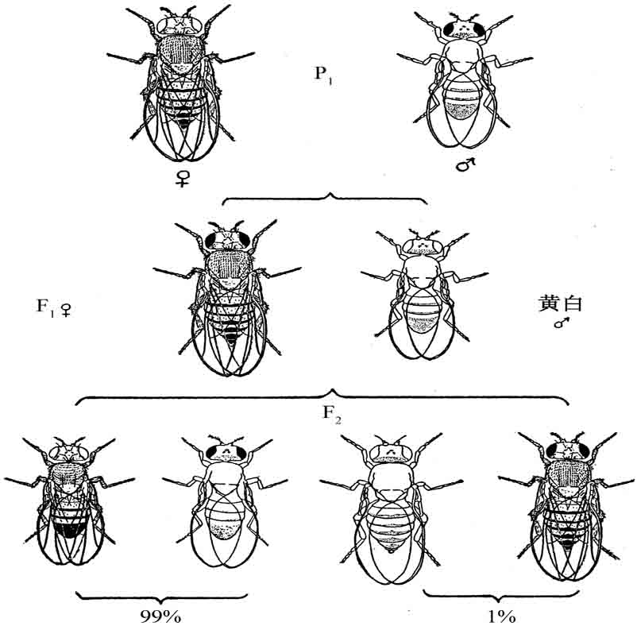
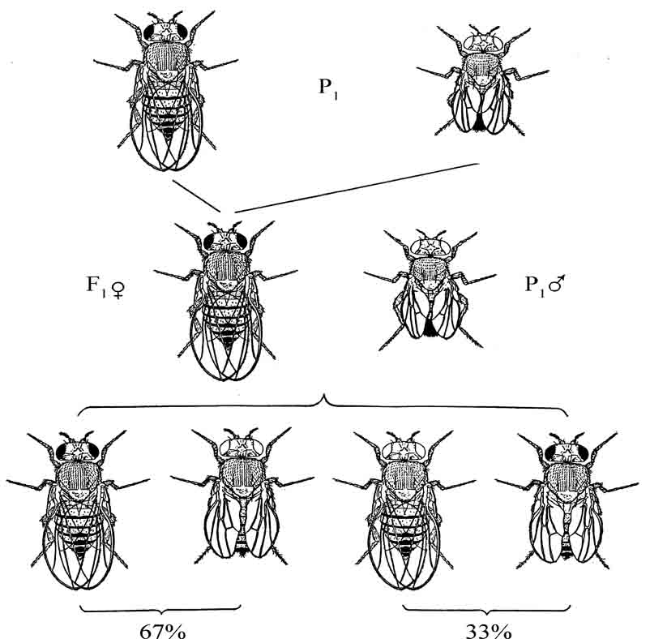
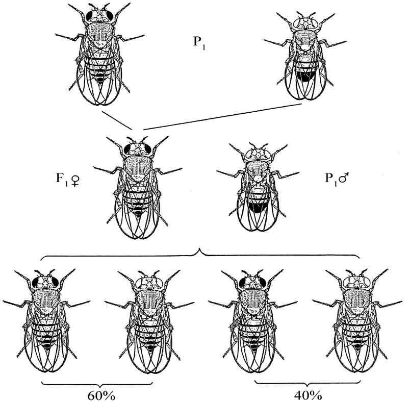

交换
一个连锁群内的基因往往不像上例所说的那样完全连锁。事实上，在同一杂种中的子代雌蝇里，同组隐性性状中有若干性状可同另一组里的若干野生型性状互相交换，不过一组内的基因互相连锁的较多，而同另一组基因互相交换的较少，所以依然可说是连锁的。它们相互间的交换作用则谓之“交换”，也就是说，在相对的两连锁组之间，许多基因可以发生有秩序的交换。了解交换作用对于以后要谈的种种是重要的，所以举出几个例子来说明一下。
一只雄蝇具有黄翅、白眼两种隐性突变性状。使它同一只野生型灰翅、红眼的雌蝇交配，所生的子女都具有灰翅红眼（图11）。再使杂交一代雌蝇同具有黄翅、白眼两个隐性性状的雄蝇交配，便会得出四种孙代个体。两种与祖父母相同，或为黄翅、白眼，或为灰翅、红眼，共占孙代99%。这些联合参加杂交的性状又联合重现的百分率，比根据孟德尔第二定律（自由组合定律）所预测的大得多。此外杂交二代还有其他两种（图11）：一种为黄翅红眼，另一种为灰翅白眼。两者共占孙代1%，称为“交换型”，代表两个连锁群之间的交换作用。

图11 两个连锁的隐性性状黄翅白眼与其正常的等位性状灰翅红眼的遗传
用同样的基因以不同的组合方式也可以做出类似的实验。如果用黄翅红眼的雄蝇同灰翅白眼的雌蝇交配，其杂交一代的雌蝇则为灰翅红眼（图12）。再使杂种雌蝇同具有黄翅白眼两种隐性突变性状的雄蝇交配，便产生了四种果蝇。两种与祖父母相同，共占孙代99%。另两种都是新的组合，或称交换型：一为黄翅白眼，一为灰翅红眼，共占杂交二代的1%。

图12 两个连锁性状与图11中的相同，但结合方式相反，（即红眼黄翅和白眼灰翅）的遗传
这些结果证明：两对性状不论杂交时的组合如何，它们之间的交换率总是一样。两种隐性如果联合参加杂交，它们也有联合重现的趋势。这种关系，Bateson和Punnett称为“联偶”。如果参加杂交的两种隐性是由父母分别得来，这两种性状也有分别重现的趋势（各与原来联合参加的一种隐性结合）。这种关系，两人称之为“推拒”。但从以上两个杂交里，显然可见，这两种关系实在是一件事的不同的表现，而不是两种现象，即参加杂交的两种连锁性状，不论它们是显性还是隐性，总表现出互相联合的趋势。
其他性状间的交换百分率，各不相同。例如具有白眼细翅两种突变性状的雄蝇（图13）同红眼长翅的野生型果蝇交配，子代都为长翅红眼。再以杂交一代雌蝇同一只白眼细翅的雄果蝇交配，孙代便得出四种：两种祖父母型占孙代67%，两种交换型占33%。

图13 白眼细翅与红眼长翅两种性连锁性状的遗传
下述实验的交换率更高。白眼叉毛的雄蝇同野生型雌蝇交配（图14），子代都为红眼直毛。再使杂交一代雌蝇同白眼叉毛的雄蝇交配，便产生四种个体。祖父母型共占孙代60%，交换型共占40%。

图14 白眼叉毛与红眼直毛两种性连锁性状的遗传
关于交换的研究证明了一切可能的交换百分率都有，高者约达50%。如果发生的交换确为50%则其数字结果将和自由组合发生时的数字相同。这样，两种性状虽然同在一个连锁群内，也不会看出它们之间的连锁关系。不过两者同属于一群的关系还是能够从各自与同一群内第三性状的共同的连锁关系来证明。如果看到的交换率在50%以上，则交换型组合便会多于祖父母型，而表现为一种颠倒的连锁了。
雌果蝇内的交换往往低于50%。这是由于一种称为双交换的现象所致。双交换的意义就是参加杂交的两对基因之间，发生了两处交换。一处交换所产生的影响被第二交换所抵消，结果，所觉察到的交换次数便降低了。这一点在下面加以解释。